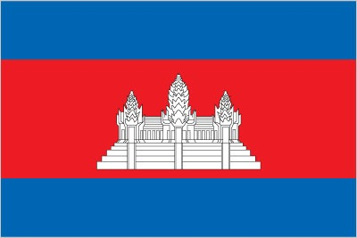
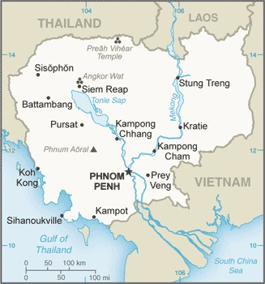

Most Cambodian consider themselves to be khmers, descendants of the Angkor Empire that extended over much of Southeast Asia and reached its zenith between the 10th and 13th centuries. Attack by the Thai and Cham (from present-day Vietnam) weakened the empire, ushering in a long period of decline. The king placed the country under the French protection in 1863, and it became part of the French Indochina in 1887. Following Japanese occupation in World War II, Cambodia gained full independence from France in 1953. In 1975, after a seven-year struggle, communist Khmer Rouge forces captured Phnom Penh and evacuated all cities and towns. At leaset 1.5 million Cambodians died from execution, forced hardships, or starvation during the Khmer Rouge regime under POL POT. A 1978 Vietnamese invasion drove the Khmer Rouge into the countryside, began a 10-year Vietnamese occupation, and touched off 13 years of internecine warfare in which a coalition of Khmer Rouge, Cambodian nationalist, and royalist insurgents, with assistance from China, fought the Vietnamese-backed People's Republic of Kampuchea (PRK)
The 1991 Paris Agreements ended the country's civil war and mandated democratic elections, which took place in 1993 and ushered in a period of multi-party democracy with a constitutional monarchy. King Norodom SIHANOUK was reinstated as head of state, and the Cambodian People's Party (CPP) and the royalist FUNCINPEC party formed a coalition government. Nevertheless, the power-sharing arrangement proved fractious and fragile, and in 1997, a coup led by CPP leader and former PRK prime minister HUN SEN dissolved the coalition and sidelined FUNCINPEC. Despite further attempts at coalition governance, the CPP has since remained in power through elections criticized for lacking fairness, political and judicial corruption, media control, and influence over labor unions, all of which have been enforced with violence and intimidation. HUN SEN remained as prime minister until 2023, when he transferred power to his son, HUN MANET. HUN SEN has subsequently maintained considerable influence as the leader of the CPP and the Senate. The CPP has also placed limits on civil society, press freedom, and freedom of expression. Desipte some economic growth and considerable investment from China over the past decade, Cambodia remains one of East Asia's poorest countries.
The remaining elements of the Khmer Rouge surrendered in 1999. A UN-backed special tribunal established in Cambodia 1997 tried some of the suviving Khmer Rouge leaders for crimes against humanity and genocide. The tribunal conclued in 2022 with three convictions.
 